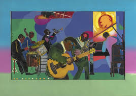
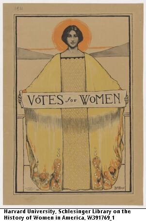

New York City has left a mark on America unlike any other, and what better
way is there to showcase the historical imprint left by such a place
besides displaying the centuries of art depicting the prolific city! Featuring
pictures and paintings alike, we offer viewers just a taste of the history and beauty
NYC art has to offer.
Click here to view image sources used.
"The Block"
Paintings, pictures, drawings, you name it. New York City has been through
every part of American history, and there's artwork left to prove it. Take the above Painting
for example. "The Block," by Romare Bearden, depicts a wonderfully colored Harlem. A historic neighborhood
in the civil rights movement, and one that led to the birth and devlopment of many black cultures. Take Jazz
for example. Music birthed entirely from the Black culture in Harlem.


Jammin' at the Savoy
Romare Bearden's artwork is seen representing the Harlem Rennaisance
again. This vibrant painting depicts a collage of Jazz painters in Bearden's iconic
collage style. The vibrant colors seen represent the musical flow from the musicians,
letting viewers picture the ambiance of Jazz in their head.
Votes for Women
This powerful painting, created by B. M. Boye, was displayed in NYC during the peak of
the women's suffrage movement. Depicting a tall, powerful women with her head in front of the sun
represents just how much of an impact women had on American society, and how unjust it was to deny
women their vote.